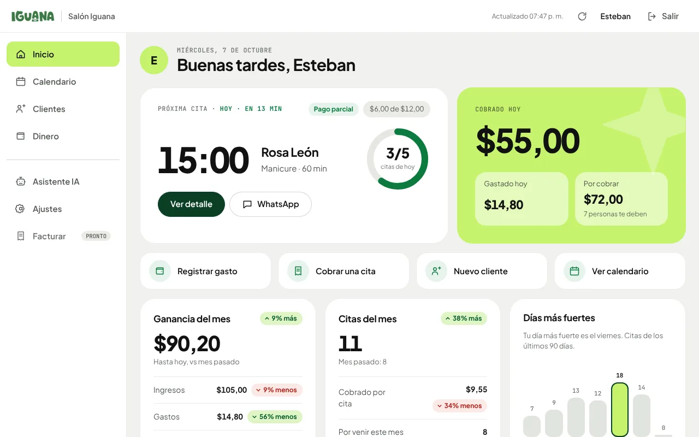
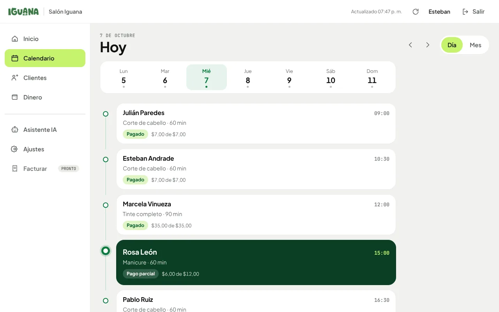
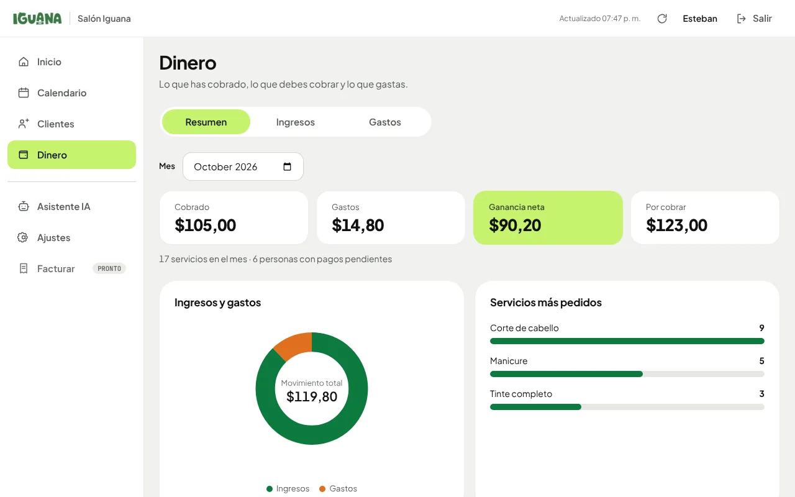
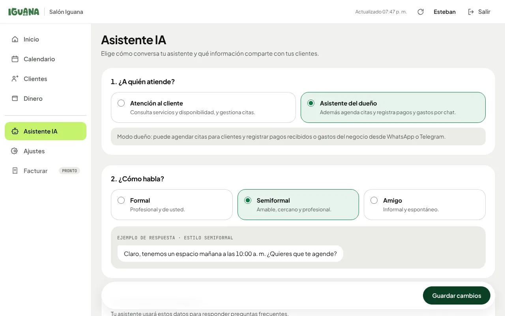
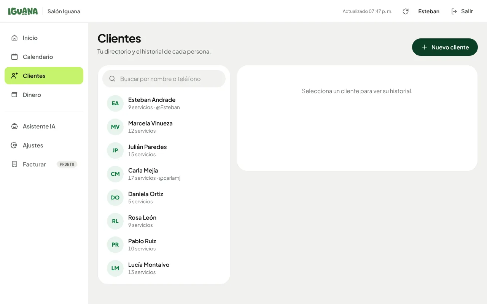
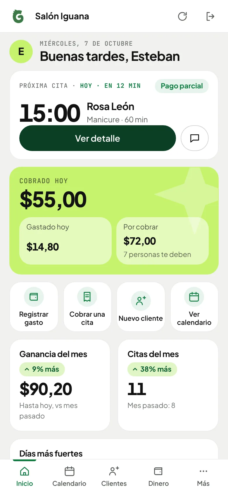
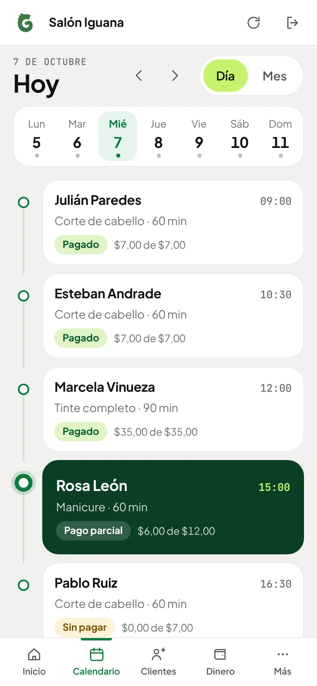
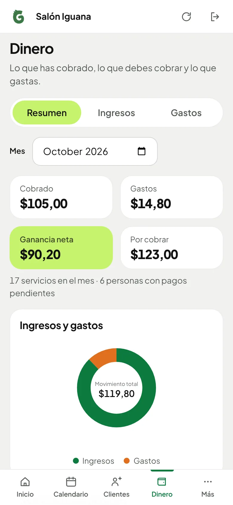
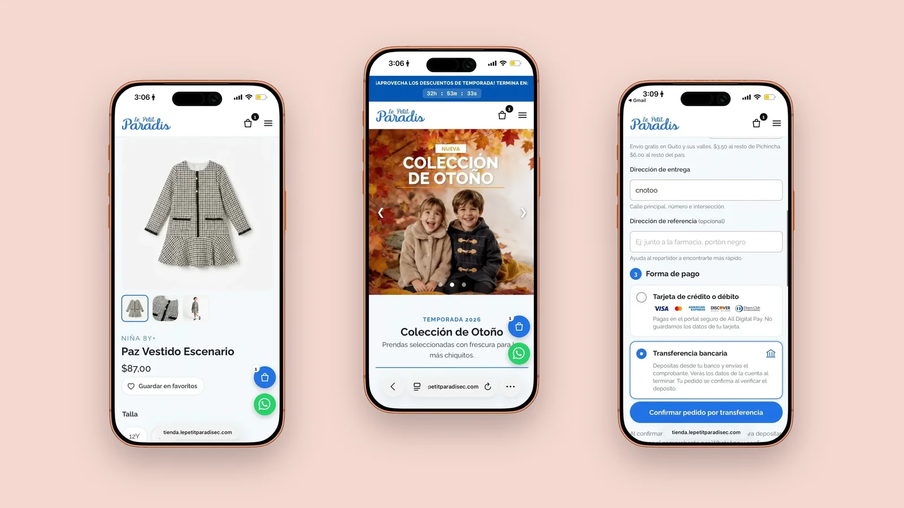

Iguana Panel · Dashboard · Design system
One panel for
the whole business.
Admin dashboard for service businesses in Ecuador: appointments, clients, money and an AI assistant. Mobile-first, on its own design system.
- Product
- Admin panel
- Role
- UX / UI design
- Language
- Spanish (EC)
- Views
- 6 + dialogs

Run the day, not the software
What matters today
Next appointment, money in and out, what is owed.
Day timeline first
Week strip plus the day. Month is one tap away.
Income, expenses, profit
Every change shown with an arrow and a label.
The owner behind the screen
Persona and pain points are a design synthesis from the product, to be validated with owner interviews.
Daniela, 35
Owns a small salon. Manages everything from her phone.
Wants: Know her day and get paid for every service.
Fears: Forgetting who still owes her, or double booking.
- Scattered agendaMake “my day” one glance
- Seconds, not minutesShow the next appointment without a tap
- Partial paymentsShow payment status on every appointment
- Money in many placesOne place for today and this month
A day in the life
Tap a stop on the path
-
Stage 1 of 5
Awareness
OverloadedDaniela notices her agenda, payments and chats live in too many places.
Does
- Keeps appointments in a notebook and the phone
- Tracks who paid in chats and notes
- Looks for something simpler
Touchpoints: Notebook, WhatsApp, spreadsheet
Thinks
“I lose track of who paid and what is next.”
Pain point
Scattered information across tools.
HMW make “my day” one glance?
Design response
One home screen: next appointment, money collected today and what is owed.
Visual hierarchyGlanceabilityMeasure: Time to find the next appointment -
Stage 2 of 5
Consideration
CuriousShe wants to know if she will understand it in seconds.
Does
- Looks at screens of the panel
- Looks for her day first
- Checks how it looks on her phone
Touchpoints: Screens, mobile browser
Thinks
“Will this be as heavy as the other panels?”
Pain point
Dashboards built for analysts, with heavy menus.
HMW show value before asking for any effort?
Design response
Daily calendar as the main view and a sidebar that becomes a bottom tab bar on mobile.
Thumb zoneProgressive disclosureMeasure: Time to understand the home screen -
Stage 3 of 5
Decision
ConfidentShe starts using it in the middle of a working day.
Does
- Reads the next appointment and its countdown
- Marks a payment, full or partial
- Reads changes as arrow plus text
Touchpoints: Home, calendar, appointment detail
Thinks
“I only have seconds between clients.”
Pain point
Partial payments are easy to forget on a small screen.
HMW keep every balance visible without extra taps?
Design response
Payment status pill on every appointment, total owed in Home, change shown as arrow plus text, never colour alone.
Visibility of statusRedundant cuesMeasure: Taps to register a payment -
Stage 4 of 5
Retention
In controlIt becomes the daily habit, from morning to end of day.
Does
- Checks collected, spent and profit at day end
- Compares the month with the last one
- Lets the AI assistant answer clients on WhatsApp
Touchpoints: Money view, assistant, settings
Thinks
“Now I know how my day really went.”
Pain point
Constant client questions and money in many places.
HMW give her the evening back?
Design response
Money summary with income and expenses, and an AI assistant on WhatsApp for repeated questions.
ConsistencyAutomationMeasure: Weekly active use, assistant resolved chats -
Stage 5 of 5
Advocacy
ProudShe recommends it to other business owners. A hypothesis to validate.
Does
- Shows it to a colleague
- Adds a team member
- Asks for the next view she needs
Touchpoints: Word of mouth, WhatsApp
Thinks
“You should try this, it is simple.”
Pain point
A tool that is hard to explain is hard to recommend.
HMW make the product easy to describe in one sentence?
Design response
A documented design system keeps every new screen consistent, accessible and quick to ship.
Design systemAccessibilityMeasure: Invites sent, retention after 30 days
Pick a stop on the path. Each one opens what happens, what hurts and how the design responds.
Design synthesis built from the product itself. Not interview data; to be validated with real users.
Decision, reason, principle
Daily calendar as the main view
A month grid hides what happens next.
Next appointment with a countdown
She has seconds, not minutes.
Change shown as arrow plus text
Colour alone fails in glare or for colour-blind users.
Payment status on every appointment
Partial payments are easy to forget.
Sidebar becomes a bottom tab bar
One-handed use on a phone.
Skip link, labelled landmarks, native dialogs
Everyone must reach everything.
A small system, defined in tokens
The whole interface is built from a short list of tokens declared once in styles.css: color, shape, a 4/8 spacing scale, two typefaces, layers and layout measures. Components only consume tokens, so a change in one place changes the whole panel.
Plus Jakarta Sans + JetBrains Mono
Plus Jakarta Sans (400–800) for interface and numbers; JetBrains Mono for times, dates and small labels, which makes schedules scan faster.
Radii 14 · 20 · 28 · pill
Spacing steps 4 · 8 · 12 · 16 · 24 · 32 · 48 px. One icon set with a single 1.75 stroke for the whole panel.
- Color is never the only signal. Status and change always carry text or an arrow.
- Semantic colors are reserved. Green = income and success, orange = expense, red = danger. They are not used for decoration.
- Touch first. Primary controls stay at least 44 px tall on mobile and layouts adapt at tablet, phone and 320–380 px widths.
- One source of truth. Tokens first, then components, then views.
The panel, view by view
Desktop first, then the same views on a phone, where the sidebar becomes a bottom tab bar.







Persona, pain points and journey are a design synthesis, not research results. Interviews and usage data will replace them.
Le Petit
A mobile-first children’s clothing store in Ecuador, designed around trust and a short checkout.
